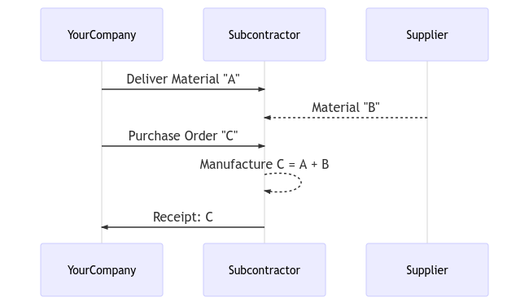
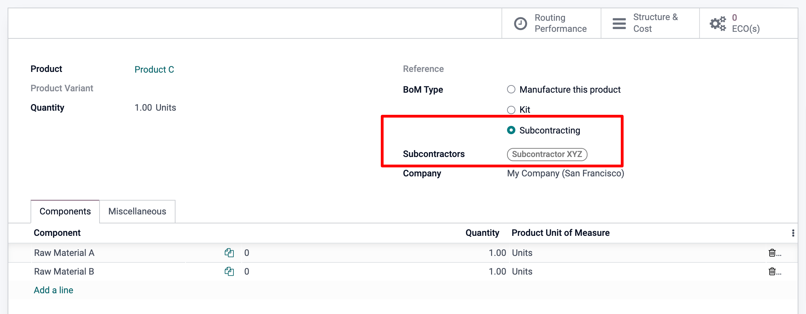

Subcontratar la fabricación¶
Subcontratar una parte o el total de las necesidades de fabricación de su empresa no es fácil. Para que funcione bien debe:
Gestionar el inventario de materias primas con su subcontratista
Enviar las materias primas a sus subcontratistas en el momento indicado
Controlar la calidad de los productos entrantes
Controlar las facturas de los subcontratistas
El siguiente es un ejemplo de subcontratación de la fabricación de «C», que se produce a partir de las materias primas «A» y «B».
Gracias a la función de subcontratación de Odoo podrá gestionar este flujo con facilidad.
Configuración¶
Para utilizar la función de subcontratación, vaya a y marque la casilla Subcontratación.

Para definir si un producto se debe subcontratar, utilice una lista de Materiales (LdM) de tipo Subcontratación.
Para crear una nueva LdM, vaya a y haga clic en crear. A continuación, enumere los componentes que necesita su subcontratista para fabricar el producto. Por motivos de costo, es posible que desee registrar todos los componentes, incluso los que se obtienen directamente del subcontratista.
Una vez que haya establecido el tipo de LdM en Subcontratación, especifique a uno o varios subcontratistas.
Flujo básico de subcontratación¶
Para que su subcontratista sepa cuántos productos necesita, cree y envíe órdenes de compra. Para ello, vaya a la aplicación Compras y cree una nueva orden de compra, asegúrese de enviársela a un proveedor que esté definido como subcontratista en la LdM de estos productos.
Una vez que se valida la orden de compra (1) se crea un recibo pendiente. Cuando se reciben los productos, se valida el recibo (2) con la cantidad real recibida. Como resultado de estas acciones, Odoo realiza lo siguiente:
Consume los componentes correspondientes en la ubicación del subcontratista basándose en la LdM y su entrada (3);
Produce los productos terminados en la ubicación del subcontratista (4);
Traslada los productos desde la ubicación del subcontratista a SuEmpresa a través del recibo validado (5).
Nota
La orden de compra es opcional. Si crea manualmente un recibo, con el subcontratista adecuado, Odoo seguirá realizando todos los movimientos. Resulta útil si el subcontratista no factura un precio fijo por artículo, sino por el tiempo y los materiales utilizados.
Valoración del inventario¶
El costo del producto fabricado «C» se define de la siguiente manera:
C = A + B + s
Donde:
A: costo de las materias primas provenientes de SuEmpresa;
- B: costo de las materias primas obtenidas directamente del
subcontratista;
s: costo del servicio subcontratado.
El envío de materias primas a sus subcontratistas (A) no afecta a la valoración del inventario, pues los componentes aún se valoran como parte de sus existencias. Puede es posible si establece la ubicación de subcontratación en una ubicación interna.
Entonces, el precio del proveedor fijado en el formulario C del producto es lo que hay que pagar al subcontratista por sus piezas y tiempo de servicio: B + s. El costo del producto tiene que ser: A + B + s, cuánto se valora el producto en la contabilidad.
Por último, la factura del subcontratista coincide con la orden de compra y el precio previsto procede de los productos C terminados.
Nota
Si la gestión de la reabastecimiento de las materias primas B en la ubicación de su subcontratista no es necesaria, solo incluya el costo de B en el precio del subcontratista s y elimine los productos B de la LdM.
Trazabilidad¶
En caso de que los productos recibidos del subcontratista contengan componentes con seguimiento, es necesario especificar sus números de serie o de lote durante la recepción.
Al recibir el producto subcontratado, aparecerá un botón con el Registrar componentes, haga clic para abrir un cuadro de diálogo y registrar los números de serie o de lote de los componentes. Si también se realiza el seguimiento del producto terminado, su número de serie o de lote también se puede registrar aquí.
A efectos de auditoría, es posible comprobar los números de lote registrados en un recibo utilizando el icono situado a la derecha de los productos terminados:
De igual forma, tenga en cuenta que en caso de que se haya seleccionado un consumo flexible en la LdM subcontratada para un producto no rastreado, la opción para registrar componentes también aparecerá opcionalmente en cada línea de movimiento. Si desea registrar más o menos consumo de componentes en su ubicación de subcontratación, al recibir su producto final.

Como se muestra en el ejemplo anterior, la recepción de estos dos productos no rastreados se puede realizar al seleccionar la opción “Establecer cantidades” o a través de los menús de tres rayas horizontales de la línea de movimiento.
Automatizar el reabastecimiento para los subcontratistas¶
Hay dos maneras de automatizar el suministro de materias primas a sus subcontratistas al comprar el producto final. El método que elija depende de si desea o no que los materiales transiten por su almacén. Ambos métodos se describen como mecanismos de estilo pull, pues lo que hace que se ejecuten es la orden de compra inicial del subcontratista, lo que crea la necesidad de materia prima.
Si está suministrando materia prima a su subcontratista desde su propio almacén, debe activar la ruta «Reabastecer al subcontratista al hacer un pedido» como se muestra a continuación. Si este es un componente que compra a un proveedor, también debe activar la ruta de compra.

Si desea que el proveedor reabastezca de forma directa a su subcontratista debe elegir la opción «Enviar al subcontratista al ordenar». Para que esta opción esté activa en el formulario del producto, primero debe activar la opción de triangulación desde . Al validar la orden a su subcontratista, esta ruta creará una solicitud de cotización de triangulación de su proveedor a ese subcontratista, después solo tendrá que revisarla y validarla.

Tenga en cuenta que la ruta de compra no está seleccionada en este caso, pues la ruta de triangulación ya es una ruta de compra.
Finalmente, si quiere rastrear las existencias de esta materia prima en sus ubicaciones subcontratadas, entonces debe activar Multi-ubicaciones en .
Desde el formulario de ubicación, podrá acceder a las Existencias Actuales

Reabastecimiento manual¶
También puede elegir reabastecer de forma manual a sus subcontratistas.
Si quiere enviar componentes a su subcontratista de manera que sea conveniente para usted, seleccione el Tipo de Operación “Reabastecer Subcontratista” desde el módulo Inventario, y cree una recolección, especificando a que subcontratista le va a entregar.

De manera alternativa, también puede solicitarle a su proveedor manualmente que reabastezca a su subcontratista creando una orden de compra tipo triangulación, con su subcontratista establecido como la dirección de entrega.